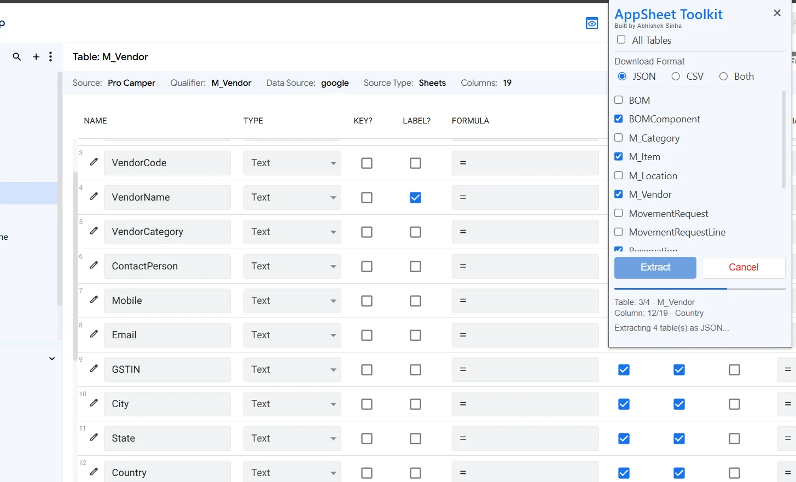
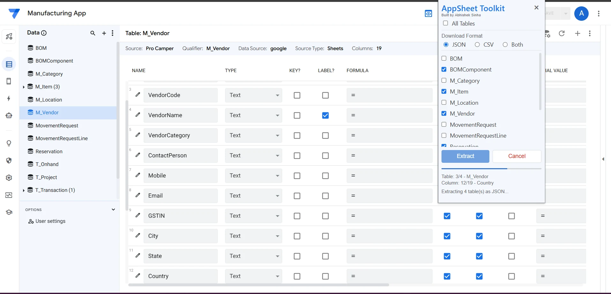

Structured JSON
Generate machine-readable metadata for documentation, automation, analysis, and AI workflows.
Browser extension for AppSheet developers
Generate clean JSON and CSV exports from AppSheet tables for documentation, analysis, backup, and AI-assisted development.
Works with existing AppSheet applications. No separate account required.

Built for AppSheet developers
Capture application structure without opening and documenting every column manually.
Generate machine-readable metadata for documentation, automation, analysis, and AI workflows.
Review column settings in Excel or share a clean flat file with project teams.
Export every table or choose only the tables relevant to your current task.
See the current table and column while extraction is running.
Stop extraction when it is no longer required without restarting the browser.
Metadata is processed locally and is not uploaded to a server operated by AppSheet Toolkit.
Why use it?
Use structured exports wherever manual screenshots and repeated configuration reviews slow down your work.
Create a reliable starting point for technical and project documentation.
Review column types, formulas, settings, and table structure at a glance.
Keep a readable snapshot of application configuration for future reference.
Give AI tools structured context without manually copying every configuration.
Simple workflow
Open the AppSheet application whose metadata you want to export.
Choose all tables or only the tables needed for your current task.
Select JSON, CSV, or both and begin extraction.
Open the files in Excel, a text editor, documentation, or an AI workflow.
Works where you work
Choose tables, follow live progress, and download the result without leaving the application configuration screen.

Built from a real developer pain point
AppSheet Toolkit was created to remove the repetitive work of reviewing and copying table metadata one column at a time. It focuses on a simple outcome: make application configuration easier to document, analyze, and reuse.
Product roadmap
Future capabilities will be shaped by real feedback from AppSheet developers and consultants.
Share a feature request →Privacy first
No advertising, analytics, tracking, user accounts, or external metadata storage.
FAQ
The essentials, without the fine print.
No. The extension does not use analytics, tracking, or an external data-storage server.
Yes. Select individual tables or use the All Tables option.
Yes. Choose Both before starting extraction.
No. AppSheet Toolkit is an independent third-party extension and is not affiliated with or endorsed by Google.
Free browser extension
Turn application metadata into usable files in a few clicks.